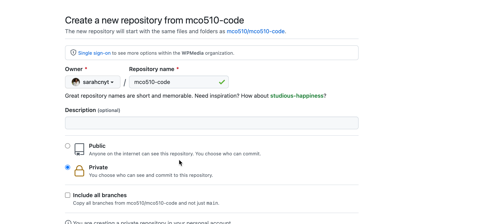

How to get and submit assignments
Review: Organizing your computer with folders
Last year, The Verge sent a shiver through the spines of professors everywhere with the piece called “File Not Found”, which chronicled the way Zoomers grew up using computers — with search. Historically, anyone who used a computer had to understand how they were organized and how to use folders. But powerful search engines both in the cloud and on your computer made that unnecessary. With that change came a huge roadblock to learning how to code – creating and navigating to a folder became an unfamiliar concept.
Computer programs are dumb. They don’t have search – all they see are file names, prefaced by the names of the folders that contain them.
On a Mac, everything begins in your “home” directory – the folder that contains all of the things specific to you when you open up the computer. When we use R, RStudio and Github, it will become crucial that you understand how the computer sees your files, and how you can find them yourself.
Here are two introductory videos about folder and files:
Renaming files
Those videos went through how to copy and organize your files, but it didn’t address something that you have to do a lot in this class: Rename files. Each of the labs or starter programs I give you will have a generic name, like lab01.qmd . You will need to rename it to add your name : lab01-scohen.qmd . Here is how to rename a file on a Mac and on Windows
Setting up the Github repository for this class
To work more effectively as a group, I want everyone in class to have the same setup on your computer – that will reduce some of the friction of just copying, saving and storing files.
- Create a folder for your R projects
Within your Documents folder (which exists in both Windows and Macs), create a folder for this class called “mco510”.
Open a browser and sign into github using the credentials you set up before class.
Go to https://github.com/mco510/mco510-code , and press the button that says “Use this template” . That will bring you to a window that looks something like this:

After you submit it, you should be taken to your account’s version of the repo. You can tell because the “Use this template” will be gone.
Look under “Settings” and look for the “Access” sidebar. Add your instructor (and anyone else you want to share with) as a collaborator. My email for github is
sarah.h.cohen@asu.eduOpen Github Desktop on your computer, and sign in if necessary. Under the File menu, choose “Clone a Repository” and choose the one that you just created. Make sure to save it as a folder your mco510 folder that you just created. It might look like it’s just a list of folders, but it also has a hidden file called .git, which keeps track of things as you want it to. (It will track differences between “commits” – TMI. )
At the end of class, you’ll see how to upload your changes to the repo.
Acquiring assignment files
We’ll be working “projects” in RStudio, which means that all of your work is contained in a specific folder, and R will only look there for your work. In the github template, there are three folders:
- labs
- prelabs
- projects
Each week, you’ll copy starter documents into your mco501-code folder in the appropriate sub-folder.
To get your assignment, go to the link provided in the week’s assignment. Right-click on the “Raw” button in that window, and choose Save File As…, navigating to the proper folder.
Saving and uploading assignment files
You have two ways to save and upload the assignment files. I suggest you choose one of these methods and stick with it, though – you risk having the online version out of sync with your computer files if you don’t.
The right way: Using Github Desktop
If you use this method, you don’t have to worry that you’ve uploaded an incomplete file, or that your computer is out of sync with your repo. However if you get a message telling you that you have sync conflict, contact me right away. You don’t want to lose any of your work.
- Open Github Desktop
- Choose “Add repository” from the file menu if it’s not already shown as the “Current repository”. Choose the “Fetch origin” button just to make sure you have all of the updates that might have been made online.
- At the bottom of the window, there is a box for “Summary (required)” – this just tells you which version of your repo it is. It’s like a name for this version. It might be “Filter homework” or “updated replication project”
- Then “commit to main”
- Then make sure to press the button at the top called “Push origin”
When you open your online version of Github, your changes will be there.
The shortcut way: Using the Github website
If you choose to work this way, don’t even open Github Desktop. It will mess you up something awful. In the event you want to switch methods, please see me – I don’t want you to lose any of your work.
Once you’re done with your homework, simply upload any of the files you want to submit using the Github interface online. Make sure to upload them to the right folder. If you forget, you can edit the file and change the name, prepending the folder name.
Submit to Canvas
Copy the link and submit it to Canvas. It’s ok if you have more than one file – I’ll find them. I just need to know that you did the work.